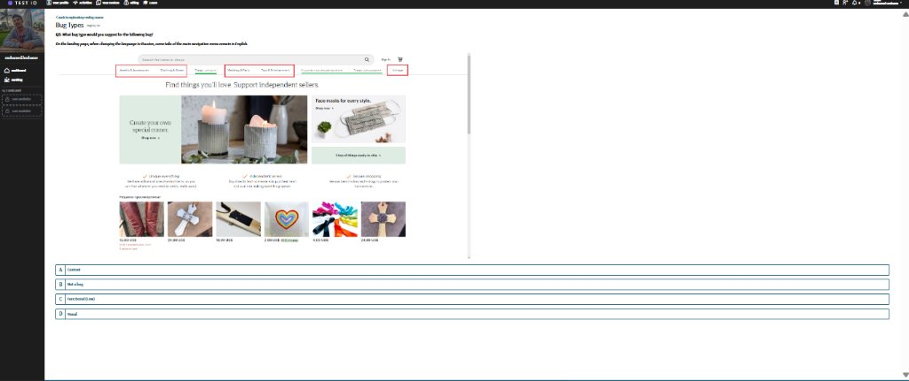
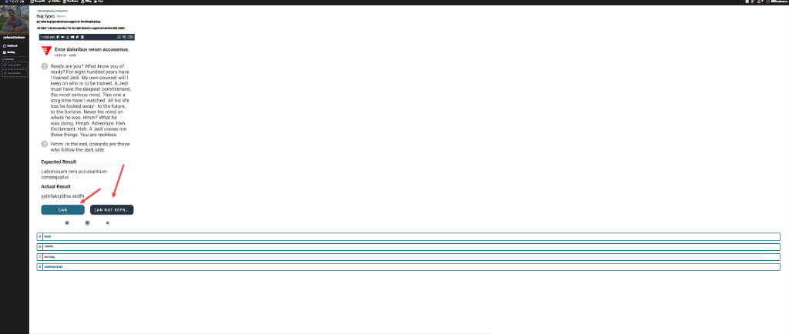

الشرح النظري ومعايير Test IO الرسمية (Study Guide)
1. Functional Bugs (أخطاء وظيفية)
تتعلق بوظائف النظام وتفاعله مع المستخدم. تحدث عندما تضغط أو تُدخل بيانات ولا يستجيب الموقع كما هو متوقع.
2. Visual Bugs (أخطاء بصرية)
تتعلق بالمظهر والتصميم وواجهة المستخدم الرسومية (GUI)، ولا تمنع الوظيفة من العمل لكن تشوه شكل الصفحة.
3. Content Bugs (أخطاء المحتوى)
تتعلق بالبيانات الفعلية المعروضة: الصور، الفيديوهات، الترجمات، والنصوص المفقودة.
تحديد درجة الخطورة (Severity Assessment) في Test IO
تعتمد درجة خطورة الأخطاء الوظيفية (Functional) على ثلاثة عوامل رئيسية: الأثر، وجود حل بديل (Workaround)، وتأثيرها على إتمام مسار الشراء.
أثر طفيف جداً، واستخدام الموقع العام لا يتأثر، أو وظيفة فرعية معطلة لكن يوجد لها حل بديل سهل ومتاح (Easy workaround).
عطل وظيفي خطير يؤثر على شريحة كبيرة من المستخدمين ولا يوجد له أي حل بديل (No workaround)، أو ميزة هامة معطلة.
عطل حرج يوقف الوظيفة الأساسية للموقع، يمنع إتمام الدفع (Showstopper in checkout)، أو انهيار تام للتطبيق (App Crash).
الروابط المكسورة (404) في الأصل Content Bug، لكنها تُرقّى إلى Low Functional Bug إذا كانت في أدوات التنقل الرئيسية: Header, Footer, Navigation menu, Breadcrumb navigation.
قاعدة صارمة في Test IO: الأخطاء الإملائية لا تُعتبر Content Bug نهائياً وممنوع رفع تقارير عنها! أي تقرير عن خطأ إملائي سيتم رفضه فوراً.
بنك أسئلة الكويز وحلولها النموذجية (Assessment Quiz 9/9)
الأسئلة الكاملة من صفحة 2 إلى 10 مع الإجابات المعتمدة وأدلة الفيديوهات والتفسيرات.
Q1: A content bug (a broken link (404 error)) is upgraded to a low functional bug if the link is located in: *(3 correct answers)
- Breadcrumb navigation
- Header/footer
- Navigation menu
Q2: Can you submit spelling mistakes as content bugs on our platform?
Q3: Which of the following scenarios are certainly functional bugs (as compared to usability suggestions)? *(3 correct answers)
- A button does not trigger any action
- The customer's product works differently from what was stated in the test instructions
- An unknown error appears that does not let you continue
Q4: What bug type would you suggest for the following bug?
When the user clicks on the test IO logo at the top left corner of the Pricing page, they get redirected back to the landing page.
Q5: What bug type would you suggest for the following bug?
On the landing page, when changing the language to Russian, some tabs of the main navigation menu remain in English.

Q6: What bug type would you suggest for the following bug?
On the Home & Living product page, when the custom price filter (from $10 to $12) is applied, some products outside of the given price range are still displayed.
Q7: What bug type would you suggest for the following bug?
The text inside the buttons is truncated / cut off (e.g. "CAN..." and "CAN NOT REPR...").
